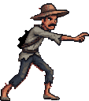
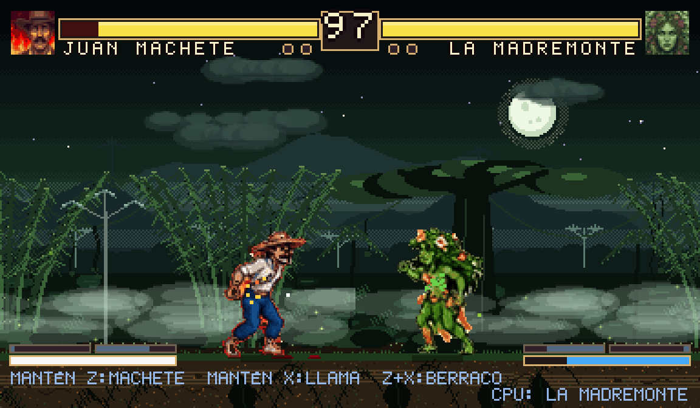
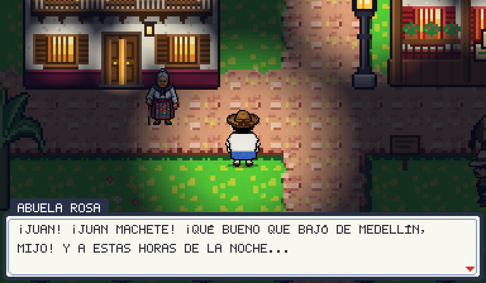
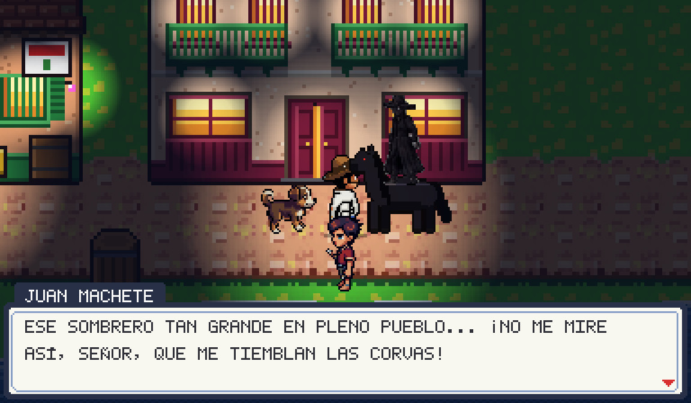
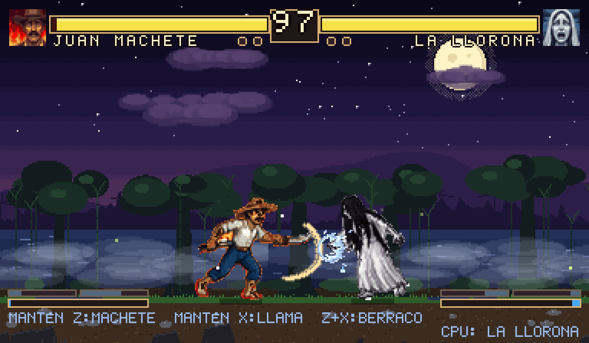
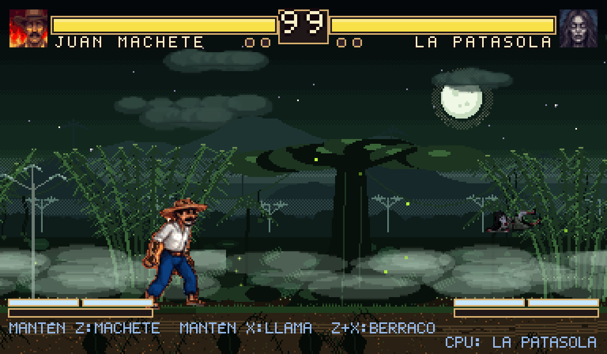
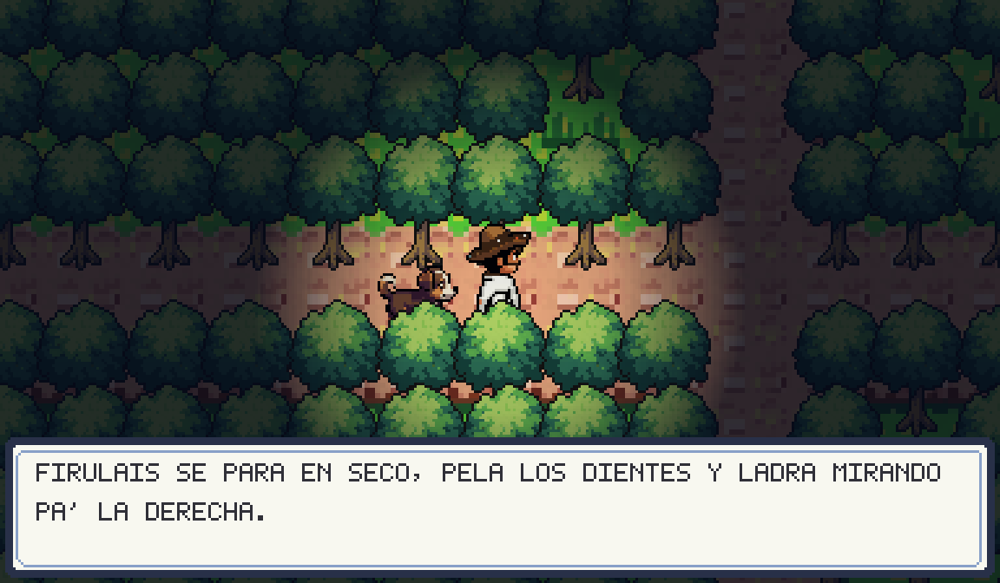
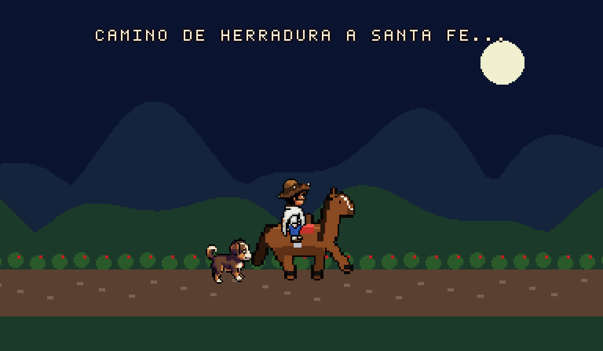
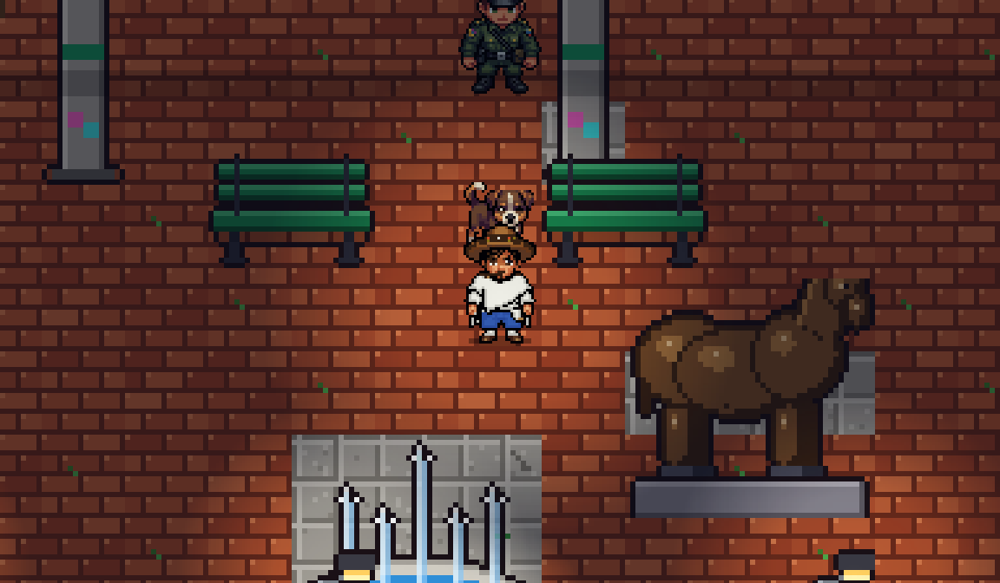

Lo que le contó la abuela Rosa
Hace nueve días enterraron a Don Joaquín, el abuelo de Juan. Este año nadie hizo la ronda, el pueblo se olvidó del trato y los mitos se alborotaron. La última noche de la novena se repite una y otra vez: mientras quede un mito suelto, no amanece.
Juan baja de Medellín y encuentra a la abuela Rosa con las puertas trancadas. El Sombrerón ronda la Plaza Botero de Medellín, la Muelona la cantina, el Silbón el llano, la Llorona la orilla del río, el Mohán el puente colgante, el Hombre Caimán la ciénaga, la Patasola y la Madremonte el monte, y Bachué la laguna del sur, detrás de un barrizal que solo se pasa a caballo.
No los vaya a matar, mijo. Son parte de esta tierra, hay que respetarlos. Cálmelos como hacía su abuelo y verá que por fin amanece.La abuela Rosa
Los mitos no se ven en el mapa. Dejan señales, se oyen de lejos y saltan encima cuando uno menos piensa. Ahí el juego cambia a una pelea uno contra uno, al mejor de tres rondas. Si gana, el mito se calma, le cuenta qué lo hirió y qué hacía el abuelo con él, y se deshace en luz. Si pierde, se acaba la partida y toca empezar de nuevo.
En el camino Juan se gana un machete, un perro callejero que ladra cuando hay peligro y un caballo para viajar a Santa Fe de Antioquia.
Cuaderno de avistamientos
Lo que el cabo Ramírez ha ido apuntando de cada mito: de dónde viene la leyenda, qué cuentan los viejos, cómo librarse de él, por dónde ronda y qué deja tirado para que uno sepa que anduvo por ahí. Al final, lo que el mito recuerda de Don Joaquín.
La ronda del abuelo
Los mitos no son enemigos. Son la memoria de esta tierra: cuando la gente los olvida, se vuelven espanto; cuando los respeta, vuelven a ser cuento.
El trato
Hace cincuenta años un muchacho llamado Joaquín llegó a la laguna de Bachué y prometió que, mientras viviera, esta tierra tendría quien la respetara.
La ronda
Cada año prendía una vela en la orilla para la Llorona, le llevaba tabaco y sal al Mohán, le silbaba de vuelta al Silbón y dejaba un aguardiente servido en la cantina para la Muelona.
El olvido
Este año nadie fue. Tumbaron monte para potrero, envenenaron el río buscando oro, llenaron la ciénaga de basura y las fiestas se volvieron trompada.
La noche que no acaba
Los nueve se alborotaron y la última noche de la novena se repite. La abuela Rosa se acuerda de todo; los demás solo sienten que ya vivieron esto.
El nieto
Juan no es brujo ni tiene pacto con nadie. Tiene el farol del abuelo, un machete y a Firulais. Le toca calmar a los nueve antes de la medianoche.
Cuando nos olvidan, nos volvemos espanto.Bachué, madre de la laguna
Así se ve de noche
Pixel art de 16 bits, combate al estilo de las maquinitas de los noventa y un modo aventura para recorrer a pie, con perro y a caballo.








Dos botones y ya
Pensado para que los niños también puedan jugar: golpe y patada. Los golpes fuertes, los poderes y el definitivo salen combinando esos dos.
Funciona con teclado, con mando o en el celular, con cruceta y botones en la pantalla. Los sustos se pueden apagar en el menú si en la casa hay alguien muy miedoso.
| Moverse, saltar y agacharse | Flechas |
|---|---|
| Golpe | Z o Espacio |
| Patada | X |
| Golpe fuerte | Tres veces seguidas el mismo botón |
| Poderes | Mantener Z o X y soltar |
| Definitivo | Z + X con la barra llena |
| Bloquear | Echarse para atrás cuando el rival ataca |
¿Se le mide a hacer la ronda?
Es gratis y corre en el navegador. No hay que instalar nada.
Jugar en el navegador